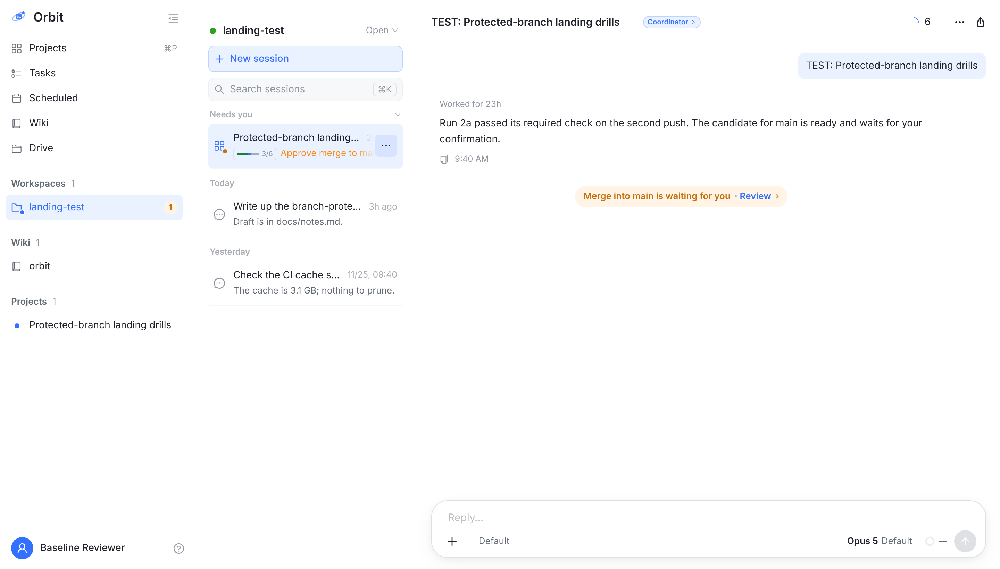
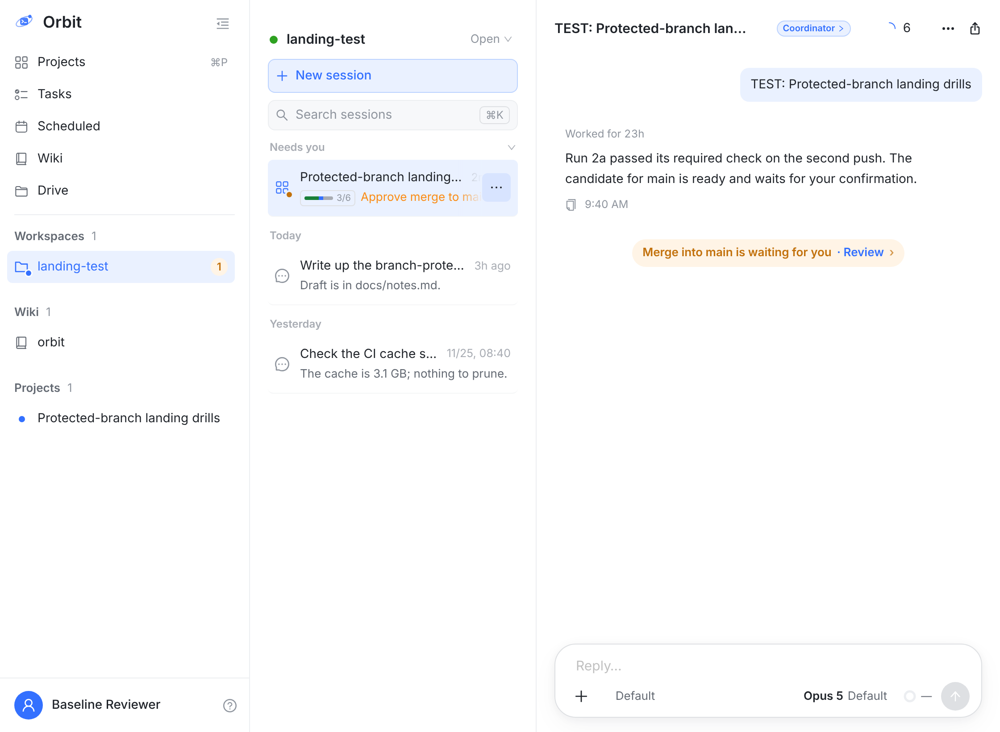
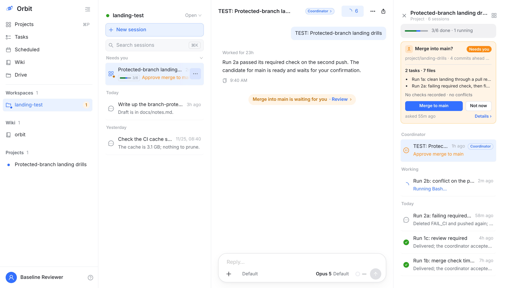
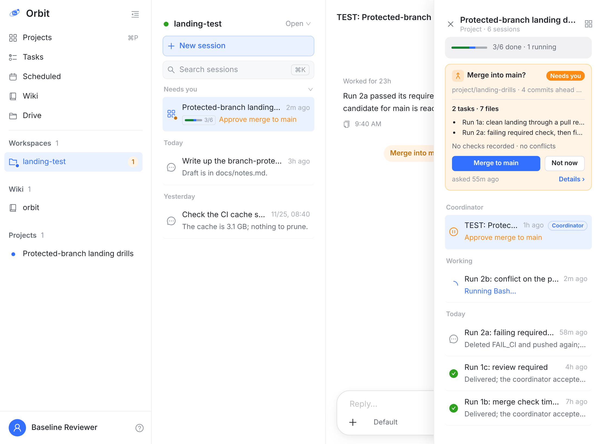

orbit.projectColumnFolded），从此每个项目都收着。点 ① 进协调者会话，能合并的卡片在收起的右栏里，看不到；只有 ② ⊞ 6 能打开它。这就是你截图里的情况。


| 情况 | 今天 | 提案 |
|---|---|---|
| 打开项目里的任意会话（宽窗口） | 手动收起过就一直收着，跨项目、跨刷新 | 右栏展开。收起状态不再存进浏览器 |
| 手动收起（✕、⊞、Esc） | 写入 orbit.projectColumnFolded=1，永久 | 只对当前会话有效：切到别的会话（同项目也算）或刷新，右栏回来 |
| 窄窗口（会话区不足 480px） | 自己收起，按 ⊞ 盖在上面展开 | 不变：普通打开仍收起 |
| 窄窗口里点 Needs-you 行，且操作在右栏 | 收起，看不到卡片 | 右栏盖在会话区上展开（同按 ⊞） |
| 操作在右栏的类型 | Approve merge to main（合并卡片）、Ready to start（进度卡里的 Start 行）、Ready to close（结算卡片） | |
| 操作在会话里的类型 | Question from coordinator、Escalated to you、Paused、request_owner_action 的卡片：本来就在会话里，置顶的那条线指向它们，不改 | |
| 手机 | 不变：项目列表是底部弹窗，⊞ 打开 | |
src/web/src/components/WorkspaceView.tsx | 去掉 PROJECT_COLUMN_FOLDED_KEY 的读写；收起状态在所选会话改变时复位；Needs-you 行点击时，如果它的类型在右栏里操作，在窄窗口设 projectColumnOnDemand |
WorkspaceView.projectSessions.test.tsx | 改“手动收起后一直收着”那条；加“切会话后右栏回来”“刷新后展开”“窄窗口点 Approve merge 行时右栏盖上来” |
| iOS / macOS / Android | 不动：手机没有右栏；macOS 如有同样的记忆另开任务 |